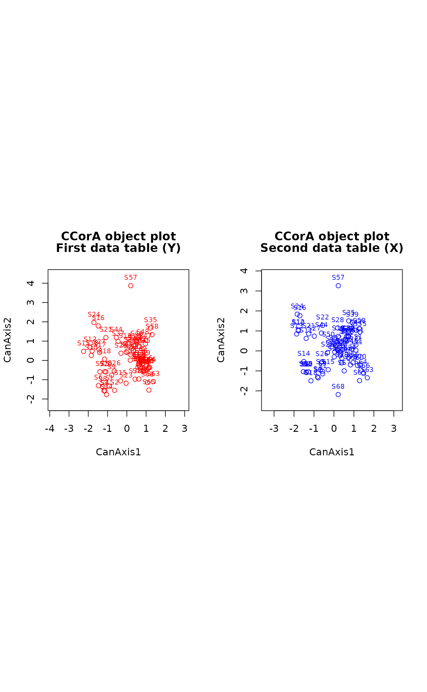
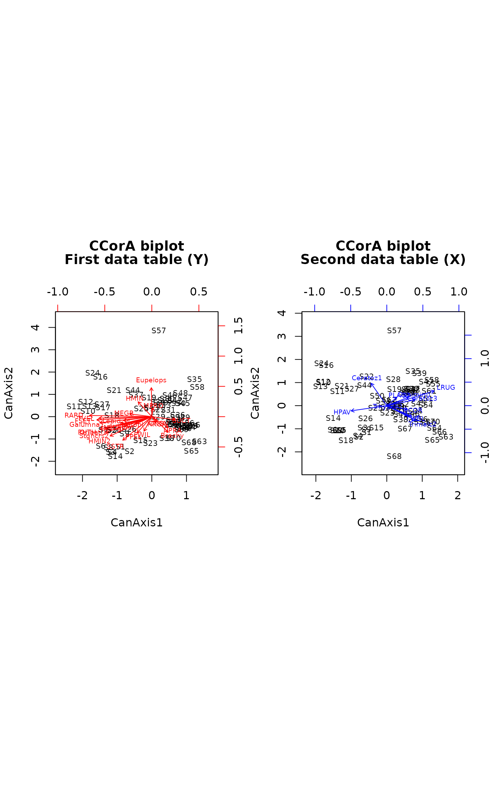
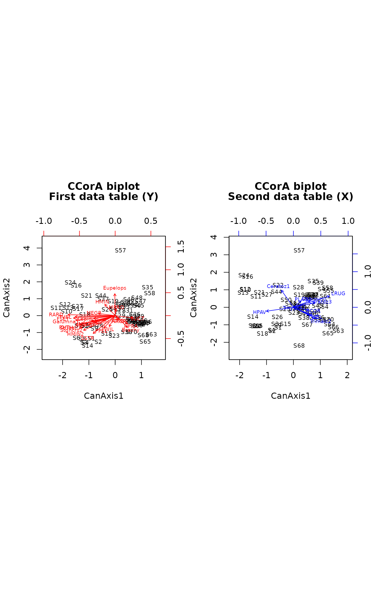

Canonical Correlation Analysis
CCorA.RdCanonical correlation analysis, following Brian McArdle's unpublished graduate course notes, plus improvements to allow the calculations in the case of very sparse and collinear matrices, and permutation test of Pillai's trace statistic.
Arguments
- Y
Left matrix (object class:
matrixordata.frame).- X
Right matrix (object class:
matrixordata.frame).- stand.Y
Logical; should
Ybe standardized?- stand.X
Logical; should
Xbe standardized?- permutations
a list of control values for the permutations as returned by the function
how, or the number of permutations required, or a permutation matrix where each row gives the permuted indices.- x
CCoaRresult object.- plot.type
A character string indicating which of the following plots should be produced:
"objects","variables","ov"(separate graphs for objects and variables), or"biplots". Any unambiguous subset containing the first letters of these names can be used instead of the full names.- xlabs
Row labels. The default is to use row names,
NULLuses row numbers instead, andNAsuppresses plotting row names completely.- plot.axes
A vector with 2 values containing the order numbers of the canonical axes to be plotted. Default: first two axes.
- int
Radius of the inner circles plotted as visual references in the plots of the variables. Default:
int=0.5. Withint=0, no inner circle is plotted.- col.Y
Color used for objects and variables in the first data table (Y) plots. In biplots, the objects are in black.
- col.X
Color used for objects and variables in the second data table (X) plots.
- cex
A vector with 2 values containing the size reduction factors for the object and variable names, respectively, in the plots. Default values:
cex=c(0.7,0.9).- ...
Other arguments passed to these functions. The function
biplot.CCorApasses graphical arguments tobiplotandbiplot.default.CCorAcurrently ignores extra arguments.
Details
Canonical correlation analysis (Hotelling 1936) seeks linear
combinations of the variables of Y that are maximally
correlated to linear combinations of the variables of X. The
analysis estimates the relationships and displays them in graphs.
Pillai's trace statistic is computed and tested parametrically (F-test);
a permutation test is also available.
Algorithmic note --
The blunt approach would be to read the two matrices, compute the
covariance matrices, then the matrix
S12 %*% inv(S22) %*% t(S12) %*% inv(S11).
Its trace is Pillai's trace statistic.
This approach may fail, however, when there is heavy multicollinearity
in very sparse data matrices. The safe approach is to replace all data
matrices by their PCA object scores.
The function can produce different types of plots depending on the option
chosen:
"objects" produces two plots of the objects, one in the space
of Y, the second in the space of X;
"variables" produces two plots of the variables, one of the variables
of Y in the space of Y, the second of the variables of X in the space of X;
"ov" produces four plots, two of the objects and two of the variables;
"biplots" produces two biplots, one for the first matrix (Y) and
one for second matrix (X) solutions. For biplots, the function passes all arguments
to biplot.default; consult its help page for configuring biplots.
Value
Function CCorA returns a list containing the following elements:
- Pillai
Pillai's trace statistic = sum of the canonical eigenvalues.
- Eigenvalues
Canonical eigenvalues. They are the squares of the canonical correlations.
- CanCorr
Canonical correlations.
- Mat.ranks
Ranks of matrices
YandX.- RDA.Rsquares
Bimultivariate redundancy coefficients (R-squares) of RDAs of Y|X and X|Y.
- RDA.adj.Rsq
RDA.Rsquaresadjusted fornand the number of explanatory variables.- nperm
Number of permutations.
- p.Pillai
Parametric probability value associated with Pillai's trace.
- p.perm
Permutational probability associated with Pillai's trace.
- Cy
Object scores in Y biplot.
- Cx
Object scores in X biplot.
- corr.Y.Cy
Scores of Y variables in Y biplot, computed as cor(Y,Cy).
- corr.X.Cx
Scores of X variables in X biplot, computed as cor(X,Cx).
- corr.Y.Cx
cor(Y,Cy) available for plotting variables Y in space of X manually.
- corr.X.Cy
cor(X,Cx) available for plotting variables X in space of Y manually.
- control
A list of control values for the permutations as returned by the function
how.- call
Call to the CCorA function.
References
Hotelling, H. 1936. Relations between two sets of variates. Biometrika 28: 321-377.
Legendre, P. 2005. Species associations: the Kendall coefficient of concordance revisited. Journal of Agricultural, Biological, and Environmental Statistics 10: 226-245.
Author
Pierre Legendre, Departement de Sciences Biologiques, Universite de Montreal. Implemented in vegan with the help of Jari Oksanen.
Examples
# Example using two mite groups. The mite data are available in vegan
data(mite)
# Two mite species associations (Legendre 2005, Fig. 4)
group.1 <- c(1,2,4:8,10:15,17,19:22,24,26:30)
group.2 <- c(3,9,16,18,23,25,31:35)
# Separate Hellinger transformations of the two groups of species
mite.hel.1 <- decostand(mite[,group.1], "hel")
mite.hel.2 <- decostand(mite[,group.2], "hel")
rownames(mite.hel.1) = paste("S",1:nrow(mite),sep="")
rownames(mite.hel.2) = paste("S",1:nrow(mite),sep="")
out <- CCorA(mite.hel.1, mite.hel.2)
out
#>
#> Canonical Correlation Analysis
#>
#> Call:
#> CCorA(Y = mite.hel.1, X = mite.hel.2)
#>
#> Y X
#> Matrix Ranks 24 11
#>
#> Pillai's trace: 4.573009
#>
#> Significance of Pillai's trace:
#> from F-distribution: 0.0032737
#> CanAxis1 CanAxis2 CanAxis3 CanAxis4 CanAxis5 CanAxis6
#> Canonical Correlations 0.92810 0.82431 0.81209 0.74981 0.70795 0.65950
#> CanAxis7 CanAxis8 CanAxis9 CanAxis10 CanAxis11
#> Canonical Correlations 0.50189 0.48179 0.41089 0.37823 0.28
#>
#> Y | X X | Y
#> RDA R squares 0.33224 0.5376
#> adj. RDA R squares 0.20560 0.2910
#>
biplot(out, "ob") # Two plots of objects

biplot(out, "v", cex=c(0.7,0.6)) # Two plots of variables
 biplot(out, "ov", cex=c(0.7,0.6)) # Four plots (2 for objects, 2 for variables)
biplot(out, "ov", cex=c(0.7,0.6)) # Four plots (2 for objects, 2 for variables)
 biplot(out, "b", cex=c(0.7,0.6)) # Two biplots

biplot(out, xlabs = NA, plot.axes = c(3,5)) # Plot axes 3, 5. No object names
biplot(out, "b", cex=c(0.7,0.6)) # Two biplots

biplot(out, xlabs = NA, plot.axes = c(3,5)) # Plot axes 3, 5. No object names
 biplot(out, plot.type="biplots", xlabs = NULL) # Replace object names by numbers
# Example using random numbers. No significant relationship is expected
mat1 <- matrix(rnorm(60),20,3)
mat2 <- matrix(rnorm(100),20,5)
out2 = CCorA(mat1, mat2, permutations=99)
out2
#>
#> Canonical Correlation Analysis
#>
#> Call:
#> CCorA(Y = mat1, X = mat2, permutations = 99)
#>
#> Y X
#> Matrix Ranks 3 5
#>
#> Pillai's trace: 0.480458
#>
#> Significance of Pillai's trace:
#> from F-distribution: 0.90606
#> based on permutations: 0.94
#> Permutation: free
#> Number of permutations: 99
#>
#> CanAxis1 CanAxis2 CanAxis3
#> Canonical Correlations 0.64421 0.23458 0.1021
#>
#> Y | X X | Y
#> RDA R squares 0.214302 0.0839
#> adj. RDA R squares -0.066305 -0.0879
#>
biplot(out2, "b")
biplot(out, plot.type="biplots", xlabs = NULL) # Replace object names by numbers
# Example using random numbers. No significant relationship is expected
mat1 <- matrix(rnorm(60),20,3)
mat2 <- matrix(rnorm(100),20,5)
out2 = CCorA(mat1, mat2, permutations=99)
out2
#>
#> Canonical Correlation Analysis
#>
#> Call:
#> CCorA(Y = mat1, X = mat2, permutations = 99)
#>
#> Y X
#> Matrix Ranks 3 5
#>
#> Pillai's trace: 0.480458
#>
#> Significance of Pillai's trace:
#> from F-distribution: 0.90606
#> based on permutations: 0.94
#> Permutation: free
#> Number of permutations: 99
#>
#> CanAxis1 CanAxis2 CanAxis3
#> Canonical Correlations 0.64421 0.23458 0.1021
#>
#> Y | X X | Y
#> RDA R squares 0.214302 0.0839
#> adj. RDA R squares -0.066305 -0.0879
#>
biplot(out2, "b")